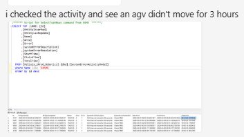

| Procedure ID | proc_rms_fleet_status_ui_check_agv_inactivity_active_errors_v1 |
|---|---|
| Title | RMS / fleet status UI check for AGV inactivity and active errors |
| Procedure Type | diagnostic |
| Primary Role | L1_support |
| Support Safe | Yes |
| Capability Tags | agv_active_errors, fleet_system_status |
| Access Surface | rms_ui |
| Audience Roles | L1_support, L2_support |
| Failure Pattern Tags | site_stoppage |
| Validation Status | needs_sme_review |
| Merge Status | source_finalized |
Use the RMS / fleet status UI at UPS Haslet TX (TXRTH) to determine whether an AGV is inactive and whether a system or AGV active error is associated with the bag-out stoppage. The incident evidence showed an AGV with approximately 3 hours without movement and advised checking the system active error when the AVEVA HMI was unavailable.
Use the RMS / fleet status UI when the site reports a bag-out stoppage and support needs to determine whether an AGV is inactive or whether an active error is visible. Use the RMS / fleet status UI as the available live diagnostic surface when the AVEVA HMI cannot be viewed.

Responsible role: L1_support
Instruction:
Open the RMS / fleet status UI and navigate to the fleet activity or AGV status view. Use the visible activity list or status table for the affected site condition.
Expected result:
The RMS / fleet status UI displays an AGV activity or status view with live robot rows or status information available for inspection.
Stop or Escalate If:
Responsible role: L1_support
Instruction:
In the RMS / fleet status UI activity view, inspect the AGV activity information for a robot with no recent movement. Capture the visible AGV identifier, if available, and the displayed inactivity duration.
Expected result:
The RMS / fleet status UI shows either recent AGV movement or an inactivity duration associated with an identifiable AGV; the incident example showed approximately 3 hours without movement.
Stop or Escalate If:
Responsible role: L1_support
Instruction:
In the RMS / fleet status UI, inspect the available system active error or AGV fault indicator. Capture the displayed error code, description, affected robot, or other visible error identity.
Expected result:
The RMS / fleet status UI shows whether an active error is present and, when available, displays its code, description, or affected robot.
Stop or Escalate If:
Responsible role: L1_support
Instruction:
Compare the activity and active-error results visible in the RMS / fleet status UI with the current bag-out condition. Preserve the visible AGV identifier, inactivity duration, error code, description, affected robot, and any unavailable values for L2 support review.
Expected result:
The RMS / fleet status UI findings identify whether continued AGV inactivity or an active error is present alongside the bag-out condition, or clearly show that the required information is unavailable.
Stop or Escalate If: